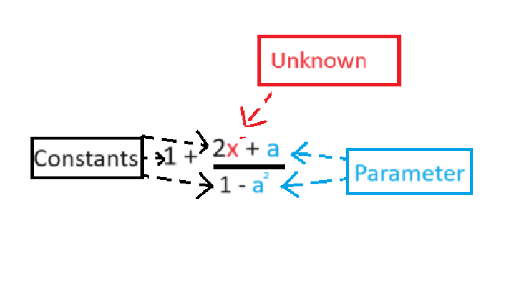
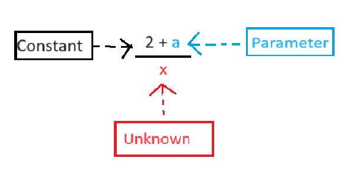
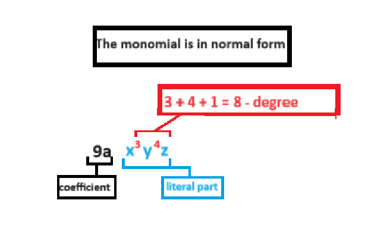
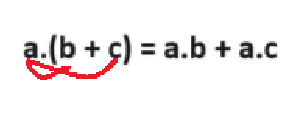
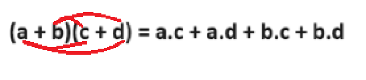

Theory
I. Variables and constants. Parameters. Rational expression
Variable (unknown)
- Definition - A letter that takes on different values.
- Way of notation - Usually variable quantities are notated with the last letters of the Latin alphabet. For example: x, y, z.
Constant quantities (constants and parameters)
- Constants Definition - A quantity denoted by a letter or number that does not change its value. A way to note - Constants are also all numbers written with digits. There are constants that are used very often and therefore constant notations are adopted for them. Such is the constant π.
- Parameters Definition - A quantity, denoted by a letter, which in one problem, under a given condition takes one constant value, and under another condition takes another constant value. Notation - It is customary to denote all constant quantities (constants and parameters) by the first letters of the Latin alphabet. For example: a, b, c, ... .
Rational expression
- Definition - Numbers written with letters or numbers associated with the operations of addition, subtraction, multiplication and division.
- A whole rational expression or just an expression - A rational expression in which there is no division by a variable (Fig. 1). 
- Fractional rational expression or fractional only expression - If a rational expression has a division by a variable (Fig. 2). 
- Numeric value of an expression - When letters are replaced by given rational numbers.
For example: A = 2x2 - a. For x = - 1, a = - 3, the numerical value of the expression A is A = 2.(- 1)2 - (- 3) = 2.1 + 3 = 2 + 3 = 5. - Allowable values (AU) - The values that the lettered quantities can take.
For example: the AU of the expression in Fig. 1 is any x and any a ≠ ±1, and that of Fig. 2 is any x ≠ 0 and any a.
II. Monomial
Definition
- An integer rational expression that is a product of numbers written with letters and numbers.
Normal (standard) form of the monomial
- there is only one number in front of the letters;
- the product of equal letters is written as a power.
The monosyllable is represented so that:
For example: given the ones complement A = 2xy2 and B = - 5x.y2.32.y3.4x3.
The monomial A is in normal form because there is only one number and each letter occurs only once.
The monomial B is not in normal form because the action between the numbers is not performed, and the same letters occur in more than one place.
The monomial A is in normal form because there is only one number and each letter occurs only once.
The monomial B is not in normal form because the action between the numbers is not performed, and the same letters occur in more than one place.
Coefficient of a monomial
- Definition - The numerical multiplier (may contain numbers and parameters) of each term written in normal form (Fig. 3). 
Power of a monomial
- Definition – The sum of the exponents of the variables involved in the normal form of the monomial (Fig. 3).
Similar monomials
- Definition – Monomials that have the same normal form, or differ only in their coefficients.
- For example: – 2xy and 3xy.
Notes:
- Equal Monomials – The monomials 4ax and 4ax are equal because they are similar and have equal coefficients.
- Opposite Monomials – The monomials (– 3by2) and 3by2 are opposites because they are similar and their factors are opposite numbers.
Addition and subtraction of similar monomials
- Rule for adding and subtracting similar monomials:
- We add or subtract the coefficients of the monomials.
- We write the variables unchanged.
For example: If we have similar monomials – 2xy and – 3xy and need to add them, then:
– 2xy – 3xy = – 5xy.
Multiplication of monomials
- We write the monomials one after the other and bring the resulting monomial into normal form.
For example: – 2x2 y3 . (– 3xy) = + 2.3.x2.x.y3.y = 6x3y4.
Exponentiation of monomials
- We exponentiate a monomial by exponentiating each of its factors.
For example: (– 2x2 y3)4 = (– 2)4.(x2)4.(y3)4 = 16x8y12.
Division of monomials
- Rule:
- We divide their coefficients and write the resulting number in the first place.
- We divide the letter part as degrees with equal bases are divided.
For example: 25a2x2y3 : 5axy2 = 5axy
III. Polynomials
Definition
- An algebraic sum of monomials is called a polynomial.
Normal form of a polynomial
- The polynomial is represented as:
- all monomials in it are in normal form;
- there are no similar monomials between monomials.
For example: given the polynomials A = 5x3 – 2x + 4 and B = −5y3 + y2 + 6y3 – 1.
The polynomial A is in normal form because all terms are in normal form and there are no similar monomials.
The polynomial B is not in normal form because two of its terms (−5y3 and 6y3) are similar monomials.
The polynomial A is in normal form because all terms are in normal form and there are no similar monomials.
The polynomial B is not in normal form because two of its terms (−5y3 and 6y3) are similar monomials.
Coefficients of a polynomial
- Definition – The coefficients of the terms of the polynomial in normal form.
- For example: The polynomial C = 5x3 – 2x + 4 is in normal form and is a sum of the monomials 5x3 , – 2x, 4 and therefore has coefficients 5, – 2, 4.
Degree of a polynomial
- Definition – The highest of the degrees of the monomials in the normal form of the polynomial.
- For example: x2 + 2x – 3 is quadratic because x2 is the highest term (2).
IV. Operations with polynomials
Addition and subtraction of polynomials
- Definition – An algebraic sum of monomials is called a polynomial
- Rule:
Polynomials are added or subtracted according to the rule for adding and subtracting monomials. If there are parentheses, we reveal them and perform a reduction of the similar monomials.
Multiplying a monomial by a polynomial
- Rule:
- We multiply the monomial by each term of the polynomial.
- The resulting sum is normalized.
- For example: If a denotes the monomial, and b + c the elements of the polynomial, then in Fig. 4 shows the rule for multiplying a monomial by a polynomial. 
Multiplying a polynomial by a polynomial
- Rule:
- We multiply each term of one polynomial by each term of the other polynomial.
- The resulting sum is normalized.
- For example: If we mark the elements of one polynomial with a + b and the elements of the other polynomial with c + d, then in Fig. 5 shows the rule for multiplying a polynomial by a polynomial. 
Exercises and Explanations
First exercise
Solve the equations
- A = 7x3 - 3x3 + 2x3 - x3;
- B = x2y - 3x2y - x2y + 2x2y;
- C = 12x + 2x - 4x - 2x - 8x;
- D = - 2x2 - (-0,7x2) + 0,3x2;
Second exercise
Solve the equations
- A = 7x3 - 3x + 2x3 + 5x;
- B = x2y - 3x2y - (x2y - 2x);
Third exercise
Solve the equation
- (x2y – 3xy) . (– 2x)
Fourth exercise
Solve the equations
- (2x + y) . (x + 3y)
- (x + 2) . (x2 – 2x + 4)